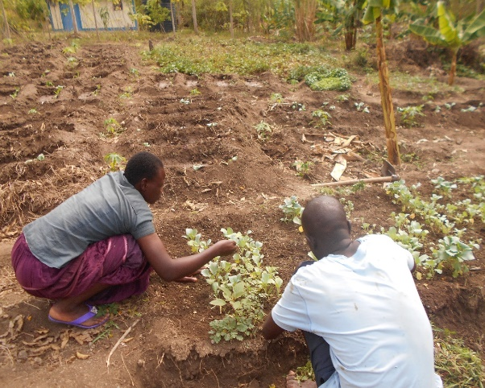
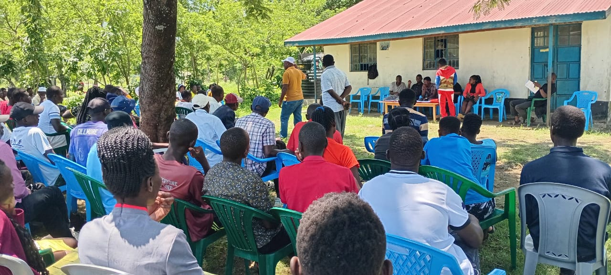

We believe the community’s work deserves to be seen and understood. Explore updates from KWEPU’s programmes, partnerships and the people whose effort makes change possible.
KWEPU’s 2025 Annual Report: Community Action Across Rusinga
The 2025 annual report, published by our partner BaRuIs e.V., documents progress across KWEPU’s tree nursery, orchard, tailoring programme, student sponsorship and local partnerships. The report highlights practical achievements as well as challenges—particularly the prolonged drought that affected tree survival and increased irrigation costs.
- About 7,000 seedlings raised: approximately 2,000 donated, 4,000 sold and 1,000 remaining in the nursery, as reported for 2025.
- School tree planting: KWEPU partnered with Kenya Commercial Bank (KCB) to plant 4,000 seedlings in schools. Follow-up checks found approximately 45% survived, while drought contributed to the loss of the rest.
- Orchard revenue: KSh 22,500 generated from produce sales in 2025, helping meet electricity, fence repair, irrigation fuel, land and equipment costs.
- Women’s skills: more than 15 community women trained in basic sewing, with school uniforms produced for sale at reduced prices or donated to students in need.
- Education access: 246 young people recruited for diploma-level courses at Mawego National Polytechnic and 32 placed at Mbita Technical Training College through cooperation with Homa Bay County Government.
- Girls’ mentoring: 127 girls reached through a mentoring programme that provided hygiene products.
- Student achievement: Bonface Okinyi defended his bachelor’s thesis at Mombasa University of Technology in September 2025 and is now a biochemist.
These figures and descriptions are drawn from the 2025 report. The school tree-planting survival figures reflect the follow-up reported for that year; they are not a current survival assessment.

Orchard Garden Generates Income for Community Work
Fruit trees and local vegetables support food security at the KWEPU garden. In 2025, produce sales generated KSh 22,500, which helped cover essential operating and development costs.
Explore the Orchard Garden →
Growing Trees—and Learning from a Difficult Drought
KWEPU raised approximately 7,000 seedlings in 2025 and worked with KCB on school planting. Follow-up checks also revealed the serious impact of drought, informing plans for replacement planting in the 2026 rainy season.
Explore Make Rusinga Green →
Practical Sewing Skills Create New Opportunities
More than 15 women from the community have received basic sewing training. The programme has produced school uniforms, with some provided free to students in need and others offered at very low prices.
Explore Tailoring & Textile Skills →
278 Young People Connected to Technical Training Opportunities
Through cooperation with Homa Bay County Government, 246 young people were recruited for diploma-level courses at Mawego National Polytechnic and 32 placed at Mbita Technical Training College.
Discover KWEPU’s Work →
Mentoring and Hygiene Support Reached 127 Girls
KWEPU’s report records a mentoring programme through which 127 girls received hygiene products, supporting girls through community-based engagement.
About KWEPU →
Community-Led Initiatives Build Skills and Resilience
KWEPU’s wider work connects household food production, livelihoods, skills development and environmental care. Read more about the programmes and how they work together.
View all projects →BaRuIs e.V. is acknowledged here as a partner and as the publisher of the linked 2025 annual report. Story summaries on this page are adapted from that report and credited to the original source.